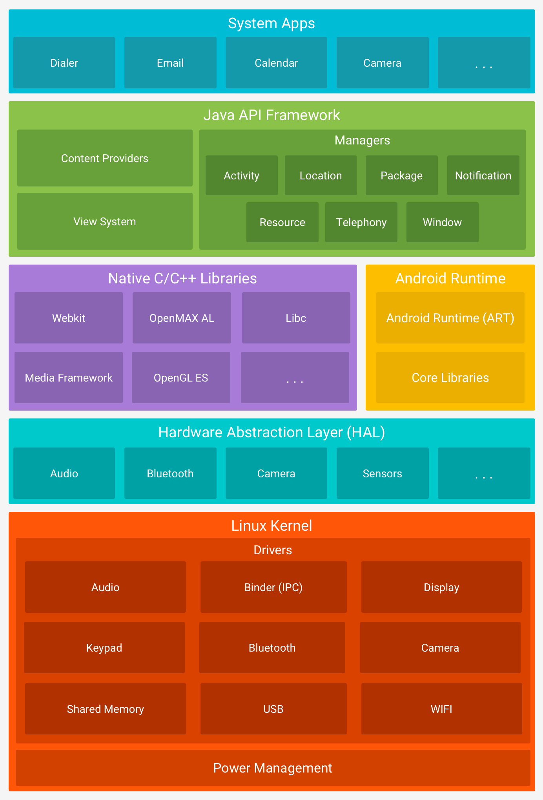
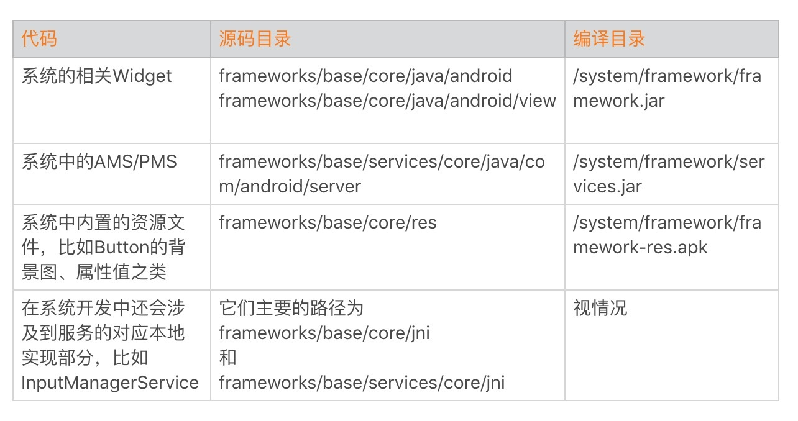
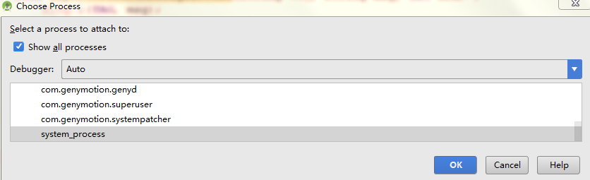
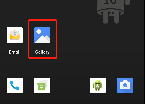
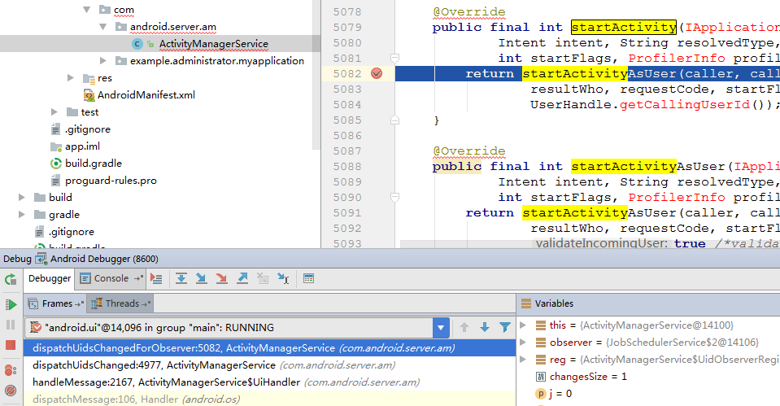
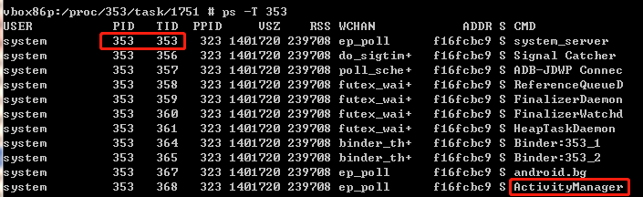
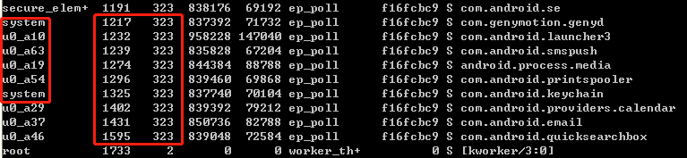
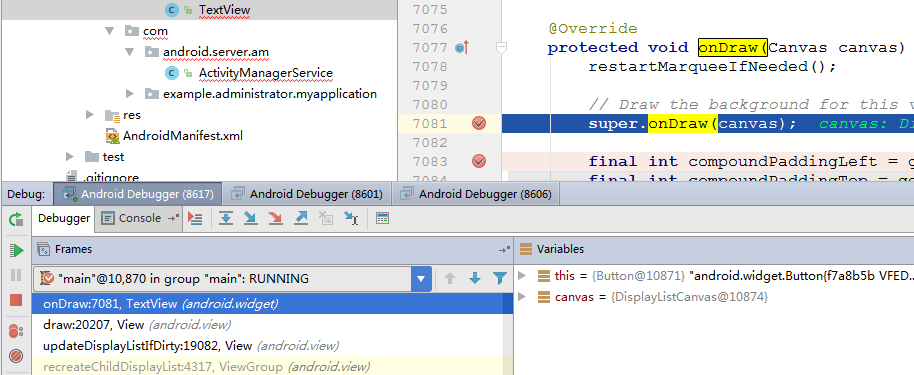

- 00 导读 如何打造高质量的应用？.md
- 00 开篇词 焦虑的移动开发者该如何破局？.md
- 01 崩溃优化（上）：关于“崩溃”那些事儿.md
- 02 崩溃优化（下）：应用崩溃了，你应该如何去分析？.md
- 03 内存优化（上）：4GB内存时代，再谈内存优化.md
- 04 内存优化（下）：内存优化这件事，应该从哪里着手？.md
- 05 卡顿优化（上）：你要掌握的卡顿分析方法.md
- 06 卡顿优化（下）：如何监控应用卡顿？.md
- 06补充篇 卡顿优化：卡顿现场与卡顿分析.md
- 07 启动优化（上）：从启动过程看启动速度优化.md
- 08 启动优化（下）：优化启动速度的进阶方法.md
- 09 I_O优化（上）：开发工程师必备的I_O优化知识.md
- 10 I_O优化（中）：不同I_O方式的使用场景是什么？.md
- 11 I_O优化（下）：如何监控线上I_O操作？.md
- 12 存储优化（上）：常见的数据存储方法有哪些？.md
- 13 存储优化（中）：如何优化数据存储？.md
- 14 存储优化（下）：数据库SQLite的使用和优化.md
- 15 网络优化（上）：移动开发工程师必备的网络优化知识.md
- 16 网络优化（中）：复杂多变的移动网络该如何优化？.md
- 17 网络优化（下）：大数据下网络该如何监控？.md
- 18 耗电优化（上）：从电量优化的演进看耗电分析.md
- 19 耗电优化（下）：耗电的优化方法与线上监控.md
- 20 UI 优化（上）：UI 渲染的几个关键概念.md
- 21 UI 优化（下）：如何优化 UI 渲染？.md
- 22 包体积优化（上）：如何减少安装包大小？.md
- 23 包体积优化（下）：资源优化的进阶实践.md
- 24 想成为Android高手，你需要先搞定这三个问题.md
- 25 如何提升组织与个人的研发效能？.md
- 26 关于编译，你需要了解什么？.md
- 27 编译插桩的三种方法：AspectJ、ASM、ReDex.md
- 28 大数据与AI，如何高效地测试？.md
- 29 从每月到每天，如何给版本发布提速？.md
- 30 数据评估（上）：如何实现高可用的上报组件？.md
- 31 数据评估（下）：什么是大数据平台？.md
- 32 线上疑难问题该如何排查和跟踪？.md
- 33 做一名有高度的移动开发工程师.md
- 34 聊聊重构：优秀的架构都是演进而来的.md
- 35 Native Hook 技术，天使还是魔鬼？.md
- 36 跨平台开发的现状与应用.md
- 37 移动开发新大陆：工作三年半，移动开发转型手游开发.md
- 38 移动开发新大陆：Android音视频开发.md
- 39 移动开发新大陆： 边缘智能计算的趋势.md
- 40 动态化实践，如何选择适合自己的方案？.md
- 41 聊聊Flutter，面对层出不穷的新技术该如何跟进？.md
- 42 Android开发高手课学习心得.md
- Android JVM TI机制详解（内含福利彩蛋）.md
- Android工程师的“面试指南”.md
- Native下如何获取调用栈？.md
- 专栏学得苦？可能你还需要一份配套学习书单.md
- 专栏学得苦？可能是方法没找对.md
- 程序员修炼之路 设计能力的提升途径.md
- 练习Sample跑起来 ASM插桩强化练习.md
- 练习Sample跑起来 唯鹿同学的练习手记 第1辑.md
- 练习Sample跑起来 唯鹿同学的练习手记 第2辑.md
- 练习Sample跑起来 唯鹿同学的练习手记 第3辑.md
- 练习Sample跑起来 热点问题答疑第1期.md
- 练习Sample跑起来 热点问题答疑第2期.md
- 练习Sample跑起来 热点问题答疑第3期.md
- 练习Sample跑起来 热点问题答疑第4期.md
- 结束语 移动开发的今天和明天.md
- 聊聊Framework的学习方法.md
聊聊Framework的学习方法
大家好，我是陆晓明，现在在一家互联网手机公司担任Android系统开发工程师。很高兴可以在极客时间Android开发高手课专栏里，分享一些我在手机行业9年的经验以及学习Android的方法。
今天我要跟你分享的是Framework的学习和调试的方法。
首先，Android是一种基于Linux的开放源代码软件栈，为广泛的设备和机型而创建。下图是Android平台的主要组件。

从图中你可以看到主要有以下几部分组成：
- Linux内核
- Android Runtime
- 原生C/C++库
- Java API框架（后面我称之为Framework框架层）
- 系统应用
我们在各个应用市场看到的，大多是第三方应用，也就是安装在data区域的应用，它们可以卸载，并且权限也受到一些限制，比如不能直接设置时间日期，需要调用到系统应用设置里面再进行操作。
而我们在应用开发过程中使用的四大组件，便是在Framework框架层进行实现，应用通过约定俗成的规则，在AndroidMainfest.xml中进行配置，然后继承对应的基类进行复写。系统在启动过程中解析AndroidMainfest.xml，将应用的信息存储下来，随后根据用户的操作，或者系统的广播触发，启动对应的应用。
那么，我们先来看看Framework框架层都有哪些东西。
Framework框架层是应用开发过程中，调用的系统方法的内部实现，比如我们使用的TextView、Button控件，都是在这里实现的。再举几个例子，我们调用ActivityManager的getRunningAppProcesses方法查看当前运行的进程列表，还有我们使用NotificationManager的notify发送一个系统通知。
让我们来看看Framework相关的代码路径。

如何快速地学习、梳理Framework知识体系呢？常见的学习方法有下面几种：
- 阅读书籍（方便梳理知识体系，但对于解决问题只能提供方向）。
- 直接阅读源码（效率低，挑战难度大）。
- 打Log和打堆栈 （效率有所提升，但需要反复编译，添加Log和堆栈代码）。
- 直接联调，实时便捷（需要调试版本）。
首先可以通过购买相关的书籍进行学习，其中主要的知识体系有Linux操作系统，比如进程、线程、进程间通信、虚拟内存，建立起自己的软件架构。在此基础上学习Android的启动过程、服务进程SystemServer的创建、各个服务线程（AMS/PMS等）的创建过程，以及Launcher的启动过程。熟悉了这些之后，你还要了解ART虚拟机的主要工作原理，以及init和Zygote的主要工作原理。之后随着在工作和实践过程中你会发现，Framework主要是围绕应用启动、显示、广播消息、按键传递、添加服务等开展，这些代码的实现主要使用的是Java和C++这两种语言。
通过书籍或者网络资料学习一段时间后，你会发现很多问题都没有现成的解决方案，而此时就需要我们深入源码中进行挖掘和学习。但是除了阅读官方文档外，别忘了调试Framework也是一把利刃，可以让你游刃有余快速定位和分析源码。
下面我们来看看调试Framework的Java部分，关于C++的部分，需要使用GDB进行调试，你可以在课下实践一下，调试的过程可以参考《深入Android源码系列（一）》。
我们这里使用Android Studio进行调试，在调试前我们要先掌握一些知识。Java代码的调试，主要依据两个因素，一个是你要调试的进程；一个是调试的类对应的包名路径，同时还要保证你所运行的手机环境和你要调试的代码是匹配的。只要这两个信息匹配，编译不通过也是可以进行调试的。
我们调试的系统服务是在SystemServer进程中，可以使用下面的命令验证（我这里使用Genymotion上安装Android对应版本镜像的环境演示）。
ps -A |grep system_server 查看系统服务进程pid
cat /proc/pid/maps |grep services 通过cat查看此进程的内存映射，看看是否services映射到内存里面。
这里我们看到信息：/system/framework/oat/x86/services.odex 。
odex是Android系统对于dex的进一步优化，目的是为了提升执行效率。从这个信息便可以确定，我们的services.jar确实是跑到这里了，也就是我们的系统服务相关联的代码，可以通过调试SystemServer进程进行跟踪。
下来我们来建立调试环境。
打开Genymotion，选择下载好Android 9.0的镜像文件，启动模拟器。
找到模拟器对应的ActivityManagerService.java代码。 我是从http://androidxref.com/下载Android 9.0对应的代码。
打开Android Studio，File -> New -> New Project然后直接Next直到完成就行。
新建一个包名，从ActivityManagerService.java文件中找到它，这里为
com.android.server.am，然后把ActivityManagerService.java放到里面即可。在ActivityManagerService.java的startActivity方法上面设置断点，然后找到菜单的Run -> Attach debugger to Android process勾选Show all process，选中SystemServer进程确定。

这时候我们点击Genymotion模拟器中桌面的一个图标，启动新的界面。

会发现这时候我们设定的断点已经生效。

你可以看到断下来的堆栈信息，以及一些变量值，然后我们可以一步步调试下去，跟踪启动的流程。
对于学习系统服务线程来讲，通过调试可以快速掌握流程，再结合阅读源码，便可以快速学习，掌握系统框架的整个逻辑，从而节省学习的时间成本。
以上我们验证了系统服务AMS服务代码的调试，其他服务调试方法也是一样，具体的线程信息，可以使用下面的命令查看。
ps -T 353
这里353是使用ps -A |grep SystemServer查出 SystemServer的进程号

在上面图中，PID = TID的只有第一行这一行，如果PID = TID的话，也就是这个线程是主线程。下面是我们平时使用Logcat查看输出的信息。
03-10 09:33:01.804 240 240 I hostapd : type=1400 audit(0.0:1123): avc: de
03-10 09:33:37.320 353 1213 D WificondControl: Scan result ready event
03-10 09:34:00.045 404 491 D hwcomposer: hw_composer sent 6 syncs in 60s
这里我还框了一个ActivityManager的线程，这个是线程的名称，通过查看这行的TID（368）就知道下面的Log就是这个线程输出的。
03-10 08:47:33.574 353 368 I ActivityManager: Force stopping com.android.providers
学习完上面的知识，相信你应该学会了系统服务的调试。通过调试分析，我们便可以将系统服务框架进行庖丁解牛般的学习，面对大量庞杂的代码掌握起来也可以轻松一些。
我们回过头来，再次在终端中输入ps -A，看看下面这一段信息。

你可以看到这里的第一列，代表的是当前的用户，这里有system root和u0_axx，不同的用户有不同的权限。我们当前关注的是第二列和第三列，第二列代表的是PID，也就是进程ID；第三列代表的是PPID，也就是父进程ID。
你发现我这里框住的都是同一个父进程，那么我们来找下这个323进程，看看它到底是谁。
root 323 1 1089040 127540 poll_schedule_timeout f16fcbc9 S zygote
这个名字在学习Android系统的时候，总被反复提及，因为它是我们Android世界的孵化器，每一个上层应用的创建，都是通过Zygote调用fork创建的子进程，而子进程可以快速继承父进程已经加载的资源库，这里主要指的是应用所需的JAR包，比如/system/framework/framework.jar，因为我们应用所需的基础控件都在这里，像View、TextView、ImageView。
接下来我来讲解下一个调试，也就是对TextView的调试（其他Button调试方式一样）。如前面所说，这个代码被编译到/system/framework/framework.jar，那么我们通过ps命令和cat /proc/pid/maps命令在Zygote中找到它，同时它能够被每一个由Zygote创建的子进程找到，比如我们当前要调试Gallery的主界面TextView。
我们验证下，使用ps -A |grep gallery3d查到Gallery对应的进程PID，使用cat /proc/pid/maps |grep framework.jar看到如下信息：
efcd5000-efcd6000 r--s 00000000 08:06 684 /system/framework/framework.jar
这说明我们要调试的应用进程在内存映射中确实存在，那么我们就需要在gallery3d进程中下断点了。
下来我们建立调试环境：
打开Genymotion，选择下载好Android 9.0的镜像文件，启动模拟器，然后在桌面上启动Gallery图库应用。
找到模拟器对应的TextView.java代码。
打开Android Studio，File -> New -> New Project然后直接Next直到完成就行。
新建一个包名，从TextView.java文件中找到它的包名，这里为android.widget，然后把TextView.java放到里面即可。
在TextView.java的onDraw方法上面设置断点，然后找到菜单的Run -> Attach debugger to Android process勾选Show all process，选中com.android.gallery3d进程（我们已知这个主界面有TextView控件）确定。
然后我们点击下这个界面左上角的菜单，随便选择一个点击，发现断点已生效，具体如下图所示。

然后我们可以使用界面上的调试按钮（或者快捷键）进行调试代码。
今天我讲解了如何调试Framework中的系统服务进程的AMS服务线程，其他PMS、WMS的调试方法跟AMS一样。并且我也讲解了如何调试一个应用里面的TextView控件，其他的比如Button、ImageView调试方法跟TextView也是一样的。
通过今天的学习，我希望能够给你一个学习系统框架最便捷的路径。在解决系统问题的时候，你可以方便的使用调试分析，从而快速定位、修复问题。
© 2019 - 2023 Liangliang Lee. Powered by gin and hexo-theme-book.